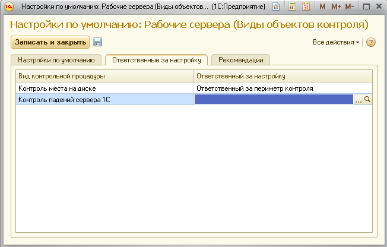
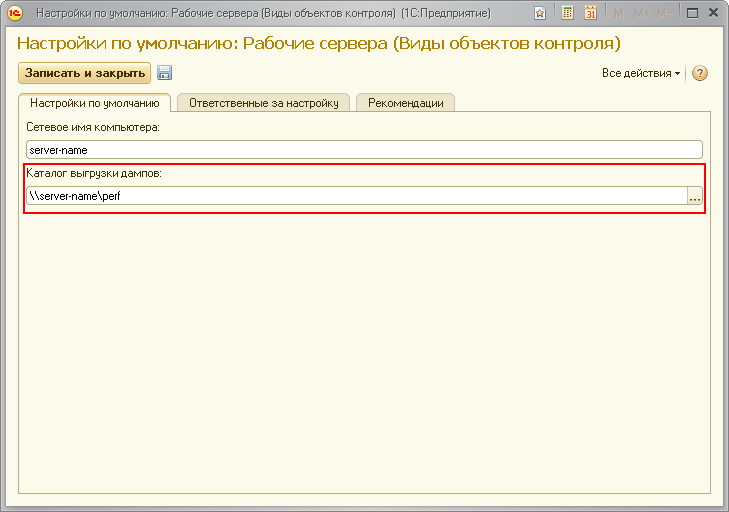

Данная форма поможет вам указать настройки, которые будут использоваться как настройки по умолчанию для всех рабочих серверов, регистрируемых в ЦКК.
Во вкладке "Ответственные за настройку" вы можете указать роли пользователей по умолчанию, ответственных за выполнения задач по настройке контрольных процедур.

В поле "Каталог выгрузки дампов" указывается каталог, в котором сохраняются дампы рабочих процессов при их аварийном завершении. Путь к каталогу может быть настроен при помощи файла logcfg.xml, который необходимо поместить в каталог <путь к каталогу с установленной версией программы>\bin\conf.
